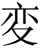
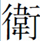
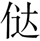

二十世纪絵畫大観一本 五·○○ 一月五日
新洋畫研究一本 四·○○
Les Artistes du Livre五本 三○·○○ 一月六日
D.Wapler木刻三枚一帖 一·○○
詩と詩論（十）一本 三·○○ 一月八日
葛飾北 一本 二○·○○ 一月十三日
一本 二○·○○ 一月十三日
Passagiere der leeren Plätze一本 三·六○ 一月十五日
Der Ausreisser一本 二·五○
Schwejk's Abenteuer三本 二四·六○
Honore Daumier一本 六·五○
ソヴェトロシアの芸術一本 三·九○ 一月十六日
昆虫記（六）一本 二·五○ 一月十七日
大十年の文学一本 一·六○ 二[一]月十八日
浮世絵傑作集（五）一帖二枚 一六·○○ 一月二十日
Gods'Man一本 八·三○ 一月二十七日
風景畫選集一本 一·七○ 一月二十八日
静物畫選集一本 一·七○
伊蘇普物語木刻図（一）八枚 二·五○ 一月三十一日
同上（第二回）七枚 二·五○
浮世絵大成（六）一本 四·一○一六八·○○○
川上澄生静物図二枚 内山君赠 二月一日
川上澄生静物図三枚 一一·六○ 二月三日
昆虫記（六至八）布面本三本 一○·○○
エゲレスいろは詩集二本 四·○○ 二月十日
風流人壹本 三·五○
浮世絵傑作集（六）一帖二枚 一八·○○ 二月十九日
生物学講座（十三）一函七本 六·○○ 二月二十日
美学及文学史論一本 二·二○ 二月二十一日
川柳漫畫全集（三）一本 二·六○ 二月二十六日
浮世絵大成（九）一本 四·六○ 二月二十八日六二·五○○
伊蘇普物語木刻十二枚 以士帖社寄赠 三月三日
近代劇全集（别册）一函 二·六○
徐旭生西游日记三本 著者赠 三月四日
复刻哥 等浮世絵七枚 长尾景和君赠 三月五日
等浮世絵七枚 长尾景和君赠 三月五日
世界美術全集（别册十六）一本 四·○○ 三月十一日
Rembrandt：Zeichnungen一本 一六·○○
Honore Daumier一本 二五·○○
Daumier und die Politik一本 八·○○
C.D.Friedrich：Bilde一本 五·○○
Ernst Barlach一本 四·○○
Der Findling一本
世界美術全集（别册一）一本 四·○○ 三月十二日
Osvobozhd.Don Kixot一本 靖华寄来 三月十三日
Zovist一本 同上
Pravd.Ist.A-KЕЯ一本 同上
Der dürer Kater一本 六·○○ 三月十六日
Bilder des Groszstadt一本 一三·○○
Die Passion eines Menschen一本 四·○○
浮世絵傑作集（七）一帖二枚 一七·○○ 三月十七日
伊蘇普物語木刻（三）十二枚 三·○○
生物学講座（十四）一函七本 四·八○ 三月二十日
書林一瞥一本 ○·六○ 三月二十四日
木刻戈理基像一幅 诗荃寄来 三月二十六日
浮世絵大成（十一）一本 四·○○ 三月二十八日
新洋畫研究（4）一本 四·七○ 三月三十日
芸術の本質と

化（上）一本 二·五○ 三月三十一日詩と詩論（十一）一本 三·六○一二○·八○○
川柳漫畫全集（四）一本 二·五○ 四月十日
世界美術全集（别卷十三）一本 三·八○ 〔五月二日〕
マ主義芸術理論一本 二·○○ 四月十一日
ゴオホ畫集一本 三·四○
支那諸子百家考一本 七·八○
浮世絵傑作集（八回）二枚 一七·○○ 四月十五日
静かなるドン（1）一本 一·八○ 四月十八日
顾凯之女史箴图一本 一·五○ 四月十九日
齐天龙寺造象拓片八枚 三·七○
益智图并续图四本 二·七○ 四月二十日
益智燕几图二本 一·五○
益智图千字文八本 一·五○ 四月二十二日
生物学講座（十五）一函八本 四·八○ 四月二十三日
ウヰリアム·テル版畫一帖三枚 一·二○ 四月二十七日
シラノ劇版畫一帖五枚 一·二○
郭忠恕辋川图卷一本 一·二○ 四月二十八日
天籁阁旧藏宋人画册一本 二·四○
文衡山高士传真迹一本 二·○○
陈老莲画册一本 一·○○
石涛纪游图咏一本 二·○○
現代欧洲文学とプロ一本 三·六○ 四月三十日六八·六○○
世界美術全集（别卷六）一本 三·八○ 〔五月二日〕
浮世絵大成（八）一本 四·○○
Der Körper des Menschen一本 四八·○○
E.Munchs Graphik一本 七·○○ 五月四日
Red Cartoons三本 New Masses社寄来 五月八日
芸術の起源及び窎達一本 二·四○
書道全集六本 二四·○○ 五月九日
霰一本 二·五○ 五月十三日
La Malgranda Johano一本 二·○○
甲骨文字研究二本 李一氓赠 五月十四日
Die Raüber画帖一帖九枚 一七八·○○ 五月十五日
索靖书出师颂一本 ○·八○
颜书裴将军诗卷一本 ○·八○
石涛山水精品一本 二·二○
浮世絵傑作集（九回）一帖二枚 一七·○○ 五月二十日
日本裸体美術全集（Ⅲ）一本 一二·○○ 五月二十一日
李怀琳书绝交书一本 ○·四○ 五月二十二日
Käthe Kollwitz版画十二枚 一二○·○○ 五月二十四日
現代尖端獍奇図鑑一本 七·○○
西域文明史概説一本 八·○○
生物学講座（十六回）一函八本 六·○○ 五月二十五日
文学論考一本 八·○○ 五月二十六日
書物の話一本 四·六○四五三·五○○
G.Hauptmann's Das Hirtenlied一本 九·六○ 六月四日
Reise durch Russland一本 一○·○○
浮世絵大成（二）一本 四·八○
日本裸体美術全集（四）一本 一七·六○
書道全集（二十）一本 四·○○ 六月五日
世界美術全集（别册十）一本 四·○○
燕寝怡情一本 三·二○ 六月七日
Alay-Oop一本 八·○○
千家元詩笺一帖四枚 二·三○ 六月八日
新洋畫研究（五）一本 四·六○
川柳漫畫全集（十）一本 二·五○ 六月十一日
Die Graphik der Neuzeit一本 三五·四○ 六月十二日
独逸語基本 語集一本 二·六○ 六月十七日
語集一本 二·六○ 六月十七日
生物学講座（十七）一函九本 四·八○ 六月十八日
H.Daumier-Mappe一帖十六枚 三·○○ 六月二十三日
K.Kollwitz-Mappe一帖十二枚 八·○○
世界美術全集（别卷5）一本 三·四○ 六月二十五日
浮世絵傑作集（十回）一帖二枚 一六·○○ 六月二十七日
田坂乾吉郎刻铜裸婦図一枚 二○·○○
太田貢水彩畫湖浜図一枚 一○·○○一七三·八○○
詩と詩論（十二）一本 四·六○ 七月二日
独和動词辞典一本 四·六○ 七月三日
Daumier-Mappe一帖十六枚 三·六○ 七月六日
Es war einmal…u.es wird sein一本 三·四○
Die Uhr一本 二·二○
書道全集（六及十四）二本 五·○○ 七月七日
浮世絵大成（十二）一本 四·四○
日本裸体美術全集（V）一本 一二·○○ 七月十三日
虫類畫譜一本 三·四○ 七月十四日
元川克已作风景画一枚 增田君赠 七月二十日
浮世絵傑作集（十一）一帖二枚 一六·○○ 七月二十二日
百华诗笺谱一函二本 振铎赠 七月二十三日
Ein Weberaufstand六枚 四四·○○ 七月二十四日
Bauernkreig四枚 七○·○○
Francisco de Goya一本 八·○○ 七月二十五日
Vincent van Gogh一本 八·○○
静なるドン（二）一本 二·○○ 七月二十六日
浮世絵大成（三）一本 四·四○ 七月二十八日
世界美術全集（别册十七）一本 三·四○
書道全集（五、八、十二、十三）四本 一○·○○
東洋畫概論一本 七·○○ 七月二十九日二一六·○○
書道全集（二十一）一本 二·五○ 八月三日
書道全集（十一）一本 二·五○ 八月五日
日本プロレタリア美術集一本 五·○○ 八月六日
川柳漫畫全集（六）一本 二·五○ 八月十三日
Spiesser-Spiegel一本 九·○○
Goethe：Pandora一本 八·○○
Dämonenu，Nachtgeschichte一本 一三·○○
Herr u.sein Knecht一本 四·○○
重印铁云藏龟六本 四·○○
Zheleznii Potok一本 靖华寄来 八月十五日
マルクス主義美学一本 二·○○ 八月十八日
浮世絵傑作集（十二）一帖二枚 一四·○○ 八月十九日
浮世絵大成（五）一本 四·四○ 八月二十九日
Les Artistes du Livre（16—21）六本 六六·○○
影宋绍兴本后汉书四十本 预付讫 八月三十一日
影宋绍熙本三国志二十本 同上
影宋庆元本五代史记十四本 同上
影元本辽史十六本 同上
影元本金史三十二本 同上一三六·九○○
書道全集（二十二）一本 二·五○ 九月五日
岩波本昆虫記（二、十八）二本 一·一○
日本裸体美術全集（二）一本 一五·○○ 九月九日
赤色親

队一本 三·四○ 九月十一日現代芸術の諸倾向一本 一·六○ 九月十七日
浮世絵版畫名作集（十三）一帖二枚 一六·○○ 九月十九日
阿Q正传日译本一本 一·五○ 九月二十一日
詩と詩論（十三）一本 四·五○ 九月二十三日
生物学講座（十八）一函十本 五·○○
理论芸術学概論一本 三·五○ 九月廿六日

刻浮世絵一帖四枚 内山嘉吉君赠世界裸体美術全集（二、五）二本 一五·○○ 九月二十九日
叢文閣本昆虫記（九）一本 二·二○
世界美術全集（别册十二）一本 三·四○ 九月三十日
浮世絵大成（七）一本 四·四○七九·一○○
世界美術全集（别册八）一本 三·四○ 〔十月三日〕
世界裸体美術全集（六）一本 七·○○ 十月八日
書道全集（三）一本 二·四○
潘锦作三国画象二本 一·二○ 十月十一日
日本裸体美術全集（一）一本 一五·○○ 十月十四日
工房有閑一夹二本 五·○○
林氏日译阿Q正传一本 ○·八○ 十月十七日
革命の娘[孃]一本 ○·八○ 十月十九日
銃殺されて生きてた男一本 ○·八○
浮世絵傑作集（十四回）一帖二枚 一五·○○ 十月二十一日
芸術的現代の諸相一本 六·四○ 十月二十四日
世界美術全集（别册九）一本 三·四○ 十月二十七日
浮世絵大成（一）一本 四·四○
二十世紀の欧洲文学一本 三·四○ 十月二十九日六六·四○○
Graphik der Neuzeit一本 诗荃寄赠 十一月四日
青在堂梅谱一本 二·○○
書道全集（一）一本 二·五○
昆虫記（十）一本 二·五○
支那人及支那社会の研究一本 内山君赠 十一月五日
Deutsche Form一本 诗荃寄赠 十一月十日
魔女（读书家版）一本 五·○○ 十一月十一日
世界裸体美術全集（三）一本 六·八○
昆虫記布装本（九及十）二本 七·○○ 十一月十九日
科学の詩人一本 三·五○
浮世絵傑作集（十五）一帖二枚 一五·○○ 十一月二十三日
日本裸体美術集（六）一本 一五·○○
川柳漫畫全集（一）一本 二·二○
世界美術全集（别册四）一本 三·五○ 十一月二十七日
华光天王传一本 一·○○ 十一月二十九日
历代名将图二本 一·六○六七·六○○
Landschaften u.Stimmungen一本 诗荃寄 十二月二日
Wendel：Baluschek一本 亦诗荃寄
世界裸体美術全集（四）一本 七·○○ 十二月五日
書道全集（十七）一本 二·五○ 十二月八日
山田[村]耕作[花]刻裸婦一枚 高见泽木版社赠
毕氏木刻铁流图二组共八枚 靖华寄来
Соврем.Обложка一本 同上 十二月十七日
園芸植物図谱（二、三）二本 一○·○○ 十二月二十三日
Фауст i Город一本 靖华寄来 十二月二十五日
全译デカアメロン二本 一二·○○ 十二月二十六日
Reise durch Russland一本 诗荃寄来 十二月二十八日
Anders Zorn一本 同上
Max Beckmann一本 同上
Barbaren u Klassiker一本 同上 十二月二十九日
Expres.Bauernmalerei一本 同上
世界美術全集（别册十八）一本 三·○○ 十二月三十日
書道全集（七）一本 二·六○ 十二月三十一日三七·○○○
总计全年共一四四七·三○○，
平均每月为一二○·六○八三……
[1] 明日书店 许杰、王育和等1928年创办于上海，1932年停业。店址原在大连湾路（今大连路），后迁至福州路。
[2] 即《关于〈唐三藏取经诗话〉的版本》。后收入《二心集》。
[3] 移居花园庄 因柔石等一月十七日被捕，鲁迅携眷移此避难，至2月28日回寓。花园庄，日本人与田丰蕃在黄陆路（今黄渡路）二十七号开设的旅馆。
[7] 为长尾景和君作字 文为：“潇湘何事等闲回，水碧沙明两岸苔。二十五弦弹夜月，不胜清怨却飞来。义山诗 长尾景和仁兄雅嘱 周豫才”。此诗应为唐代钱起作《归雁》，条幅误作“义山诗”。
[8] 南江店友 当指在上海被捕的“左联”作家柔石等人。柔石等于1月17日被捕，鲁迅曾试图托人营救，未果。南江，旧指吴淞江，入上海段即今苏州河。
[9] 《阿Q正传》日本文译稿 日本林守仁（山上正义）译，译稿经鲁迅校订并写校释八十五条。
[11] 弘一上人 即李叔同（1880—1942），浙江平湖人，我国早期话剧活动家、艺术教育家。1918年出家，法号弘一。
[13] 即《赠日本歌人》、《无题》（“大野多钩棘”）、《湘灵歌》。后均收入《集外集》。
[14] 晤丛芜 本日韦丛芜在内山书店会见鲁迅时，提出结束未名社业务的问题。
[17] 同文书院 全称东亚同文书院。前身是1883年设立的东洋学馆，1900年改称。日本东亚同文会创办，校址在上海虹桥路一○○号，当时校长为大内畅三。鲁迅本日往讲《流氓与文学》，讲稿佚。
[18] 往春阳馆照相 是日，鲁迅与冯雪峰通宵编印《前哨·纪念战死者专号》毕，冯雪峰提议两家合影留念。
[19] 五月人形金太郎 金太郎，日本传说中的英雄坂田金时。日本风俗，端午节时以其形象制作玩具，称“五月人形金太郎”。
[20] 声明退出未名社 1930年9月起，未名社事务由韦丛芜主持。因管理不善，使经费支绌，遂与开明书店签订合同，将社员译著印行事宜托开明书店代理，并函请鲁迅也遵守该店有关部门规定，鲁迅对此不满，遂声明退出。
[21] New Masses社 新群众社。美国进步杂志社。1926年成立，出版文学与政治月刊《新群众》。
[22] 《人兽世界》 又名《人兽奇观》（Trade Horn），纪录片，美国米高梅影片公司1930年出品。
[23] 旧寓 指景云里二十三号。1928年9月鲁迅迁离后，即由王育和、柔石等迁入。
[24] 整理译本《毁灭》 鲁迅于是夜改定《毁灭》全书译稿，不久即付大江书铺排印。
[25] 珂罗版 照相平版印版的一种。因用厚磨砂玻璃做版材，故又名玻璃版。
[27] 《勇敢的约翰》插画三种 指该书世界语译本中雅希克·阿尔莫斯（Jaschik Almos）所作插画三张。
[28] 京寓 日记又作“平寓”、“燕寓”，均指鲁迅在北平的寓所。
[30] 诗荃集《文选》句《咏怀》诗 原诗有序云：“余迹离别故国既久，结习已空，文字语言日益疏远。一日晨起，忽接到鲁迅先生惠寄素笺一束，欣忭之情，良不可任。适会列卡河水大发，浸淫街巷，所居地低洼，遂不能下楼。俯视屋影摇光，舟行入户，殊属不可乐观。幸新与房东媾和，面包腊肠，由彼供给，加之茶叶菸草火柴无缺，亦飘飘然如蓬莱中人。遂取《文选》句集为《咏怀》诗一篇，岂曰成裘，实同缀衲，意不欲负此佳纸而已，并以张黑誌字体书之，以副绍兴鲁公之厚意。一九三一年五月八日石油灯下。”原诗如次：“朝霞开宿雾（渊明），清风吹我衿（嗣宗）。索居易永久（灵运），良讯代兼金（士衡）。荒草何茫茫（渊明），浮景忽西沉（孟阳）。登高望九州（嗣宗），谓若旁无人（太冲）。迅雷中霄激（士衡），玄云起重阴（嗣宗）。兰枯柳亦衰（渊明），鹈 发哀音（嗣宗）。鸾翮有时（延年），夫子值狂生（彦昇）。洞庭空波澜（灵运），南岳无余云（渊明）。慕类抱情殷（延年），知深觉命轻（灵运）。五车摧笔锋（朋远），百二侔秦京（士衡）。畴昔怀微志（景阳），心迹犹未并（灵运）。云霞收夕晖（灵运），淮海变微禽（景纯）。衣冠终冥漠（延年），荃蕙岂久芬（延年）。咏言著斯章（嗣宗），聊以莹心神（渊明）。”
发哀音（嗣宗）。鸾翮有时（延年），夫子值狂生（彦昇）。洞庭空波澜（灵运），南岳无余云（渊明）。慕类抱情殷（延年），知深觉命轻（灵运）。五车摧笔锋（朋远），百二侔秦京（士衡）。畴昔怀微志（景阳），心迹犹未并（灵运）。云霞收夕晖（灵运），淮海变微禽（景纯）。衣冠终冥漠（延年），荃蕙岂久芬（延年）。咏言著斯章（嗣宗），聊以莹心神（渊明）。”
[31] 功德林 素菜馆，1922年创办于北京东路，1932年迁卡尔登路（今黄河路）梅白克路（今凤阳路）口。内山完造常邀文化界人士在此雅集，称“功德林漫谈会”。
[32] 《兽国春秋》 原名《Rango》，有声探险片。美国派拉蒙影片公司1931年出品。
[34] 联华歌舞团 指联华影业公司音乐歌舞班。黎锦晖主办。
[35] 一八艺社展览会 一八艺社，1929年由杭州艺术专科学校学生二十多人组成的美术团体。主要成员有胡一川、陈广、陈铁耕等。1930年陈广、陈铁耕等因被迫害到上海另组一八艺社。1931年6月11日至13日由杭州一八艺社成员在上海靶子路吴淞路日本上海每日新闻社二楼举行第二次展览会，共展出木刻、油画、雕塑等作品一百八十余件。鲁迅曾为之作《一八艺社习作展览会小引》，后收入《二心集》。
[36] 指《铁流》译稿。曹靖华于4月30日译毕此书，即以复写本辗转通过在欧洲的友人寄交鲁迅。
[38] 《Escape》 全称《I Can't Escape》，中译名《法网与情网》。美国雷电华影片公司1930年出品。
[39] 上海艺术专科学校 设在江湾路天通庵车站附近。陈抱一、王道源、关紫兰等在该校任教。6月25日至7月1日在校内举办学期绘画展览会，展出该校师生及日本画家作品六百余件，其中油画最多，本日鲁迅前往参观。
[41] 索还《士敏土之图》 鲁迅曾将所印的《梅斐尔德木刻士敏土之图》四十部托北平未名社代售，现因其停办，故索回存书。
[42] 为增田君讲《中国小说史略》毕 是年3月，增田涉来沪向鲁迅请教有关《中国小说史略》等问题。鲁迅每日下午以日语为之讲解三小时左右，本日告一段落。同年12月增田涉回国后，便着手该书的日译。
[43] 暑期学校 指社会科学研究会。“左联”所办的暑期学校，主要培训工农作者。是日鲁迅所讲《上海文艺之一瞥》，后收入《二心集》。
[44] 往福井写真馆照相 因谣传鲁迅被捕，在北平的母亲担忧鲁迅等的安危，鲁迅遂摄合影以释母念。但此照在冲洗中损坏，故于三十日重照。
[45] 当时丁玲（丁琳）筹办《北斗》月刊，为选用插图事偕冯雪峰（文英）往访鲁迅。鲁迅提供了珂勒惠支的版画《牺牲》和里惠拉的壁画《贫人之夜》等。
[46] 所看电影为《狼狈为奸》（See America Thirsty），喜剧片，美国环球影片公司1930年出品。
[47] 《肥料》 小说，苏联绥甫林娜著，鲁迅译文发表于《北斗》月刊创刊号和第一卷第二期（1931年9月、10月），后收入《一天的工作》。
[48] 所看电影为《摩洛哥》（Morocco），故事片，美国派拉蒙影片公司1930年出品。
[49] 柔石遗孤教育费 柔石牺牲后，王育和等人发起募集其子女的教育费。鲁迅捐助一百元。
[50] 《Ingagi》 中译名《兽世界》，风光片，刚果影片公司1931年出品。
[51] 指举办暑期木刻讲习班。为了给青年木刻者创造学习条件，鲁迅借长春路三六○号（现三一九号）日语学校举办暑期木刻讲习班，请时在日本成城学园教美术的内山嘉吉传授木刻技法，并自任翻译。为配合讲授，鲁迅每日带来珂勒惠支及英、日等国的版画，利用课余供学员观摩，并进行讲解。讲习班参加者有上海一八艺社社员六人、上海艺专学生二人、上海美专学生二人、白鹅画会学生三人，共十三名。是中国现代第一个木刻技法讲习会。讲习共六天：17日讲授版画简史及创作版画基本知识；18日至20日讲授黑白木刻制作法；21日讲授套色木刻制作法；22日对学员习作进行讲评。
[53] 《铁流》注 指俄文《铁流》第六版注释的中译稿。24日所记“《铁流》注释”同此。参看《集外集拾遗·〈铁流〉编校后记》。
[54] 《哥萨克》 原名《The Cossaks》，故事片，美国米高梅影片公司1928年出品。
[55] 为一八艺社木刻部讲一小时 是日，鲁迅引导一八艺社部分成员观摩自己所藏画片、画册，并作讲解。
[58] 《铁流》序文等 指《铁流》作者绥拉菲摩维支的论文《我怎么写〈铁流〉的》，并第五、六版上的自序两小节。5日所记“绥氏论文等”同此。
[59] 书欧阳炯《南乡子》词一幅 文为：“洞口谁家，木兰船系木兰花。红袖女儿相引去，游南浦，笑传春风相对语。录欧阳炯《南乡子》词奉应 内山松藻女史雅属 鲁迅”。
[60] 校《朝花夕拾》 校后付上海北新书局重印，为该书之第三版。
[61] 湖风书局 日记又作“湖风书店”。“左联”通过宣侠父筹资创办于1931年，设在七浦路。该书局曾出版鲁迅校订的《勇敢的约翰》（孙用译）及《夏娃日记》（李兰译）等书。
[62] 所观电影为《破坏者》（Spoilers），故事片，美国派拉蒙影片公司1930年出品。
[63] 得靖华信 信内有《铁流》作者给中译本所作特注及曹靖华自己订正的条目共二十五条，因其时中译本正在排印，鲁迅便将此信录入《〈铁流〉编校后记》（后收入《集外集拾遗》），作为“一张《铁流》的订正及添注表”。21日所记“得靖华信，一日发”同此。
[64] 现代木刻研究会 以参加暑期木刻讲习班的“一八艺社”成员等为主，并吸收其他青年木刻者组成的美术团体。当时为筹款向德国定购木刻参考书籍发起募捐。
[65] 湖风书店交来印图之泉 《勇敢的约翰》作者像及插图十二幅的制版、印刷费共二百三十余元，系由鲁迅代付，本日湖风书局先送还五十元。
[67] 即《勇敢的约翰》校样。7日及12日所记的校稿同此。
[68] 所观电影为《两亲家游菲洲》（The Cohens And Kellys In Africa），喜剧片，美国好莱坞1931年出品。
[69] 《南极探险》 原名《With Byrd at The South Pole》，风光片，美国派拉蒙影片公司1929年出品。
[70] 《西线无事》 原名《All Quiet on The West Front》，通译《西线无战事》，美国环球影片公司1930年根据雷马克同名小说改编出品。
[71] 《铁流》地图 即《达曼军行军图》。后印入中译本《铁流》。
[72] 《Belly in the Kid》 中译名《义士艳史》。美国米高梅影片公司1930年出品。
[73] 所观电影为《蝙蝠祟》（The Bat Whispers），美国联美影片公司1931年出品。
[74] 《故宇妖风》 原名《The Cat Creeps》，又译《黑猫爪》，美国环球影片公司1930年出品。
[75] 刈田岳碛河底石所刻小地藏 刈田，日本宫城县十六郡之一，在阿武隈河支流白石河上游的山谷里；河底石，指白石河河底石；小地藏，指地藏菩萨的小雕像。
[76] 《士敏土》序 即《〈士敏土〉代序》。苏联戈庚（П.С. Коган）作。鲁迅译文印入1932年新生命书局再版《士敏土》，后收入《译丛补》。
[79] 《士敏土》序跋及插画 序跋，指鲁迅译的代序和董绍明、蔡咏裳作的后记；插画，指《梅斐尔德木刻〈士敏土〉之图》。
[80] 新生命书局 樊仲云创办，设在海宁路传薪里。董绍明、蔡咏裳合译的《士敏土》经鲁迅介绍，1932年由该局再版。
[81] 《地狱天使》 原名《Hella Angels》，美国联美影片公司1930年出品。
[82] 《亚克与人性》 小说，苏联左祝黎著，鲁迅译文收入《竖琴》。
[83] 即《〈野草〉英文译本序》。后收入《二心集》。该书译稿毁于一·二八战事，未出版。
[84] Capstan 英文，“绞盘牌”香烟，俗称“白锡包”，美国和英国WD&HOWILIS公司出品。
[85] 《银谷飞仙》 原名《Silver Valley》，美国福克斯影片公司1927年出品。
[86] 《人间天堂》 原名《This Is Heaven》，美国联美影片公司1929年出品。
[87] 《三剑客》 原名《Three Musketeers》，美国联美影片公司1921年出品。
[88] 即《父亲》。小说，苏联萧洛霍夫著，鲁迅译文收入《一天的工作》。
[89] 《禽兽世界》 原名《East of Borneo》，探险片，美国环球影片公司1931年出品。
[90] 《陈查理》 全名《中国大侦探陈查理》，原名《Charlie Chan Carries On》，美国福克斯影片公司1931年出品。
[91] 为筹办“德国版画展览会”，汉堡嘉夫人来借版画。展览会后延至1932年6月4日开幕。
[94] 毕斯凯莱夫木刻《〈铁流〉图》 曹靖华应鲁迅之托，在苏联遍访两年，始获得此图原版拓本。但鲁迅收到时《铁流》中译本已装订成书，未及印入。后鲁迅以锌版复制，拟单独印行，却又毁于“一·二八”战火。1933年7月始于《文学》创刊号刊出。
[95] 以中国纸寄赠苏联木刻家。曹靖华寄来《〈铁流〉图》时在信中说：这木刻版画定价虽贵，然而无须付款，苏联的木刻家说，印画莫妙于中国纸，只要寄些给他就好。鲁迅便于十五日买纸，本日寄去两包，托曹靖华转致毕斯凯莱夫。